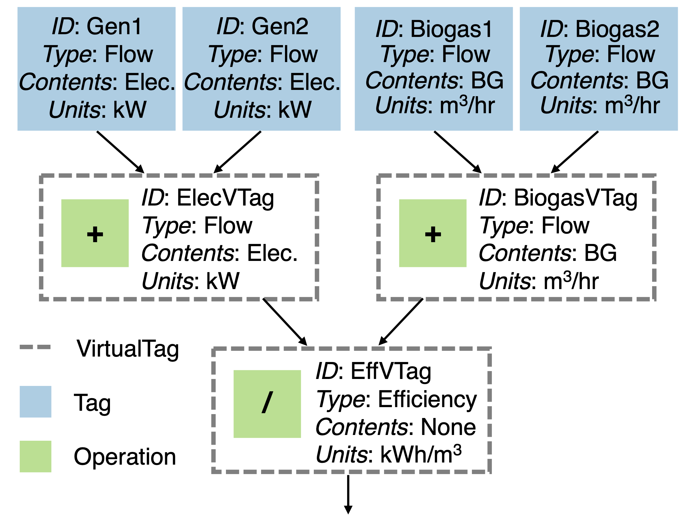

Advanced Features
Efficiency Curves
Some attributes in PyPES are not static metadata. For example, a Pump may have an efficiency curve rather
than a single efficiency value. To define an efficiency curve, first define a function and then use
set_pump_curve() to set the pump_curve attribute to that function. thermal_efficiency
and electrical_efficiency of Cogeneration and Boiler objects can be similarly defined.
from pype_schema.node import Pump
from utils import parse_quantity, PumpType, ContentsType
min_flow = parse_quantity(0, "gpm")
max_flow = parse_quantity(1000, "gpm")
avg_flow = parse_quantity(750, "gpm")
elevation = parse_quantity(10, "m")
horsepower = parse_quantity(100, "hp")
def efficiency_curve(flowrate):
return - (flowrate ** 2)
pump = Pump(
"PumpA",
ContentsType.UntreatedSewage,
ContentsType.UntreatedSewage,
min_flow,
max_flow,
avg_flow,
elevation,
horsepower,
1,
pump_type=PumpType.VFD
)
pump.set_pump_curve(efficiency_curve)
Currently, only static efficiency values are supported in the JSON format, but the long-term plan is to support dictionaries (through interpolation) and lambda functions.
Algebraic Mode
“Algebraic” mode involves the combination of operations are separated into binary (e.g., “+” or “-”) and unary (e.g., “∼” or “»”). Due to the closure of binary and unary operations, it is possible to recursively combine tags in any configuration the user desires. This allows for complex new data streams to seamlessly be integrated into system models.
As an example, the figure below shows efficiency calculated by VirtualTag (“EffVTag”),
which is composed of two VirtualTag objects (“ElecVTag” and “BiogasVTag”) combined with the / operator.
VirtualTag objects “ElecVTag” and “BiogasVTag” are each a composition of two real-world sensor measurements using the + operator.


An example of how to define all the potential attributes in algebraic mode is available in wrrf_sample.json. A full table of supported algebraic operations can be found below. Proofs of operator closure will be published along with the PyPES manuscript, which is currently under peer review.
Operation |
Type |
Description |
|---|---|---|
noop |
Unary operator |
No operation. Useful when skipping a tag in a list of unary operations |
delta |
Unary operator |
Input[t] - input[t-1] for t in 1,…,T |
<< |
Unary operator |
Shift all data to the left one timestep, so that the first timestep will be deleted from the data |
>> |
Unary operator |
Shift all data to the right one timestep, so that the last timestep will be deleted from the data |
- |
Unary operator |
Unary negation |
~ |
Unary operator |
Boolean negation. If numerical data, all nonzero values are changed to 0 and zeros to 1 |
+ |
Binary operator |
Addition |
- |
Binary operator |
Subtraction |
* |
Binary operator |
Multiplication |
/ |
Binary operator |
Division |
value |
Constant |
A value that is constant at all timesteps |
units |
Constant |
Dimensionality (e.g., cubic meters or kilowatts) |
Custom Mode
Where algebraic mode combines tags with a fixed set of operators, custom mode lets a VirtualTag apply any
calculation that can be written as a single lambda expression, given as a string:
"lambda flow, power: (power / flow).rolling(3).mean()"
Every expression is validated before it is built, by validate_custom_operation() and
build_custom_operation() in pype_schema.operations:
Raised |
When |
|---|---|
|
The expression uses something that is not allowed, or is too large. |
|
The string is not valid Python. |
|
The operation is not a string. |
Trust Model
Operations should come from the developer who created the file, or another trusted party. The checks stop accidents and make a tampered file hard to turn into arbitrary code execution; they are not a substitute for process-level isolation:
Only the syntax and the names and attributes an expression can touch are restricted. CPU time and memory used while the expression runs are not (
9**9**9is valid, and so is[0] * 10**10).An operation may modify the data passed to it in place (for example
inplace=Trueorout=). This is deliberate: it is a side effect on the caller’s data, not a way around the restrictions, so do not assume your inputs are unchanged afterwards.
What an Expression Can Use
Syntax. Allowed: arithmetic, bitwise, comparison and boolean operators; calls with keyword arguments;
indexing and slicing; list, tuple, dict and set displays; list, set and dict comprehensions and generator
expressions; conditional expressions; nested lambdas. Not allowed: statements, assignment expressions (:=),
f-strings, await and yield, default values for lambda parameters, and comprehension targets that are not
plain names ([0 for np.sum in x] would rebind a library function). Expressions of more than 100,000
characters or 50,000 syntax nodes are rejected. Validation does not use the Python call stack, so deeply nested
expressions, such as a sum of several hundred terms, are fine.
Names. An expression can refer to its own parameters, comprehension variables, the library names below, and
these builtins: abs, all, any, bool, dict, divmod, enumerate, filter, float,
int, len, list, map, max, min, pow, range, reversed, round, set,
sorted, str, sum, tuple, zip. Each only computes on the values it is given. The other
builtins are left out because they reach around the attribute allow-list: they import modules or run code, touch
files and input, look an attribute up from a string, or expose classes and namespaces. Any other name is
rejected, and so is any name or attribute that starts with an underscore, because that is how an expression
would walk to an object’s internals (for example __class__).
Libraries. np (numpy), pd (pandas), sp (scipy) and math can only be used as
prefixes, and only for members on the allow-list. A library or submodule cannot be used as a value (f(np),
[np], a bare np.linalg), which keeps a module object from being passed around.
"lambda x: np.sqrt(x)" # fine
"lambda x: sp.stats.zscore(x)" # fine: submodules work as prefixes too
"lambda x: x.apply(np.sqrt)" # fine
"lambda x: np.load('data.npy')" # rejected: not on the allow-list
"lambda x: pd.read_csv('data.csv')" # rejected: not on the allow-list
Methods and attributes of ordinary objects (a Series, DataFrame, array, string, and so on) are
allowed by name, from a generated list. x.diff(), x.rolling(3).mean(), x.iloc[0] and
x.str.upper() are fine; x.to_csv(...), x.query(...), x.eval(...), x.plot() and
x.__class__ are rejected.
Guarded methods. apply, agg, aggregate and transform look an attribute up by name when given
a string (x.agg("to_csv") would call x.to_csv()), which would bypass that list. They are only allowed
when called directly, with something whose method name is visible and checked. The argument may be:
a lambda,
a library function, such as
np.mean,a builtin, such as
abs,a string literal that names an allowed method, such as
"sum",a list or tuple of those, or a dict whose keys are literal labels and whose values are those.
"lambda x: x.apply(lambda v: v + 1)" # fine
"lambda x: x.agg(['sum', np.mean])" # fine
"lambda x: x.agg({'a': np.mean, 'b': ['min', 'max']})" # fine
"lambda x: x.agg('to_csv')" # rejected: not an allowed method
"lambda x: x.agg('to_' + 'csv')" # rejected: name built at runtime
"lambda x: map(x.agg, ['sum'])" # rejected: method passed as a value
"lambda x, f: x.apply(f)" # rejected: the function is not visible
"lambda x: x.agg(total=('a', np.sum))" # rejected: named aggregation
* and ** arguments to these methods are also rejected.
Maintaining the Allow-Lists
What an expression can reach is defined by a generated block at the bottom of operations.py, between the
BEGIN GENERATED ALLOW-LISTS and END GENERATED ALLOW-LISTS markers. It defines:
ALLOWED_MODULE_MEMBERSWhat can be reached through
np,pd,spandmath, and their submodules.ALLOWED_ATTRIBUTESAttribute names allowed on ordinary objects.
GUARDED_METHODSThe methods that need the special handling described above.
pype_schema/scripts/generate_allowlist.py writes the block from the public API of the installed numpy,
pandas, scipy and math, and removes everything it judges dangerous (below). The result is frozen and
default-deny, so a function added by a newer library version is unreachable until the generator is re-run and
the diff is reviewed. pype_schema/scripts/allowlist_report.md lists everything that was excluded, and why.
Do not edit the block by hand: test_generated_block_has_not_been_edited_by_hand fails if it differs from
what the generator writes.
Category |
Excluded because it |
|---|---|
IO |
reads or writes files, URLs, the clipboard, databases, or pickles |
EVAL |
evaluates code or expression strings |
DISPATCH |
turns a string into a function or attribute lookup ( |
STATE |
changes process-wide state: configuration, the global random seed, registries, mutable module-level containers |
NATIVE |
exposes raw memory or native-code interfaces |
ENV |
reveals the environment: paths, build configuration, versions, source |
OTHER |
is not computation on data, or has not been reviewed: plotting, testing, typing, deprecated aliases, internals |
python pype_schema/scripts/generate_allowlist.py # regenerate, then review the diff
python pype_schema/scripts/generate_allowlist.py --check # change nothing; for CI
The result depends on the environment it runs in, so generate in one canonical environment:
The Python version changes the
mathmembers and the methods of built-in types.The versions of numpy, pandas and scipy decide which functions exist. A CI matrix usually resolves different versions for each Python.
Optional packages count too. If one is installed, whatever it adds to numpy, pandas or scipy is listed like everything else. numexpr is the known case: once installed, importing pandas makes it add
numpy.expm1x, an alias ofnumpy.expm1.
The block records the Python, numpy, pandas and scipy versions in a Generated with ... comment, but not
optional packages. Run --check in one CI job, with the same Python minor version, pinned libraries and
optional packages; the rest of a CI matrix runs pytest only.
Exit code |
Meaning |
|---|---|
0 |
The block is up to date. |
1 |
Regenerating would change it: new library API to review, or a different set of optional
packages. The output lists the names that would be added ( |
2 |
This is not the environment the block was generated in, so the two cannot be compared. This is a CI configuration problem, not drift. |
--check only reads, so it also works on an installed copy of the package. Rewriting an installed copy is
refused unless --force is passed.
To change a decision, edit the rules at the top of the generator and re-run it:
KEEPAllow a library member that a rule would exclude.
KEEP_ATTRSAllow an attribute name that a rule would exclude.
EXPLICIT and NAME_RULESExclude a name, with a category and a reason.
When reviewing a diff, look for names that read or write files, evaluate strings, turn a string into an
attribute lookup, change global state or touch raw memory, and for names that another package has leaked into
the library. For example, pandas.NamedFunc has the same signature as NamedAgg, which takes a function
name as a string, so it is excluded in the same way.